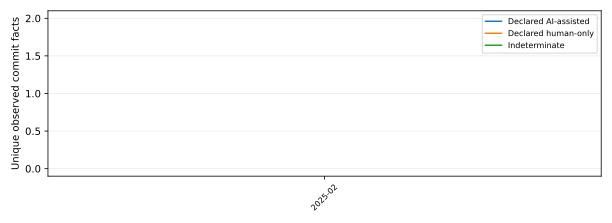

Current data overview — declared-attribution, not proof of origin
Declared attribution is evidence of an explicit declaration under the named rule version; it is not proof of code origin.
Panel population: configured-panel snapshot.
Panel source data time (UTC): 2026-09-26T03:30:00Z.
Observed event window (UTC): 2025-02-01T00:00:00Z through 2026-09-25T01:00:00Z .
Primary denominator: 2 non-bot unique observed commit facts. Missing declaration is indeterminate, not evidence of human work.
Monthly rows cover only observed source windows within the last ten years. Missing months are not zeroes and do not imply missing GitHub activity.

| Month (UTC) | AI-assisted | Human-only | Indeterminate | Bots | Non-bot total |
|---|---|---|---|---|---|
| 2025-02 | 0 | 0 | 2 | 0 | 2 |
These are GitHub language bytes, not lines of code. Both distributions use the identical measured panel population. 0 repository/repositories with no measured code are excluded from both denominators.
| Language | Equal-repository share | Byte-weighted share | Aggregate language bytes |
|---|---|---|---|
| CSS | 0.00% | 0.00% | 18 |
| Dockerfile | 0.05% | 0.12% | 7345 |
| HTML | 0.05% | 0.08% | 4939 |
| JavaScript | 0.06% | 0.14% | 9231 |
| Makefile | 0.21% | 0.04% | 2527 |
| Python | 66.42% | 14.98% | 955863 |
| SCSS | 1.22% | 3.10% | 197783 |
| Shell | 0.09% | 0.21% | 13545 |
| TypeScript | 31.91% | 81.33% | 5187823 |
Measured repositories: 3; total measured language bytes: 6379074.
The primary category is declared-attribution: an explicit versioned declaration is recognized, but it is never proof that a human or tool originated code. Multiple valid tool labels still count once in the primary AI-assisted category.
The exact source identifiers, timestamps, UTC windows, status, and source digests are included in the machine-readable report manifest.
| Kind/status | Source | Observed (UTC) | UTC window | Accepted records |
|---|---|---|---|---|
| repository-panel / succeeded | https://api.github.com/ | 2026-09-24T16:50:47Z | N/A — N/A | 3 |
| observed-events / succeeded | https://data.gharchive.org/2025-02-01-0.json.gz | 2026-09-24T16:53:35Z | 2025-02-01T00:00:00Z — 2025-02-01T01:00:00Z | 2 |
| observed-events / succeeded | https://data.gharchive.org/2025-02-01-0.json.gz | 2026-09-24T17:02:27Z | 2025-02-01T00:00:00Z — 2025-02-01T01:00:00Z | 2 |
| observed-events / succeeded | https://data.gharchive.org/2025-02-01-0.json.gz | 2026-09-24T17:07:28Z | 2025-02-01T00:00:00Z — 2025-02-01T01:00:00Z | 2 |
| repository-panel / succeeded | https://api.github.com/ | 2026-09-25T03:30:27Z | N/A — N/A | 3 |
| observed-events / succeeded | https://data.gharchive.org/2026-09-24-0.json.gz | 2026-09-25T03:30:30Z | 2026-09-24T00:00:00Z — 2026-09-24T01:00:00Z | 0 |
| repository-panel / succeeded | https://api.github.com/ | 2026-09-26T03:30:00Z | N/A — N/A | 3 |
| observed-events / succeeded | https://data.gharchive.org/2026-09-25-0.json.gz | 2026-09-26T03:30:03Z | 2026-09-25T00:00:00Z — 2026-09-25T01:00:00Z | 0 |
Official references: GitHub REST API documentation; GitHub Search API limitations; GH Archive.